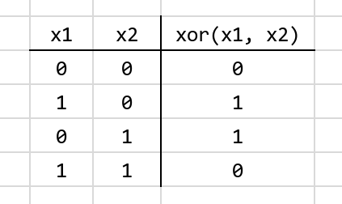
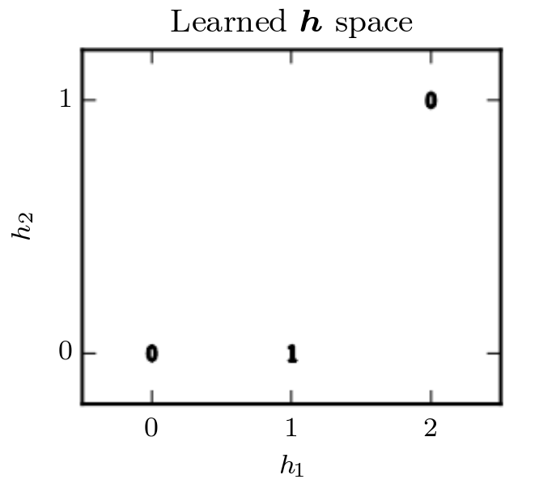

Long story short: After a few prototypes and feedback, I’m happy to announce that hasktorch-0.0.1.0 is now officially on Haskage! The API documentation can be found here. The rest of this post introduces the library and shows you how to build a fully-connected XOR predictor. In a followup post, I’ll talk a bit about internals, go over some caveats, talk about what future development entails, and hopefully get you all excited about contributing : )
The Hasktorch suite of libraries includes the haskell bindings to PyTorch’s backend (in hasktorch-ffi-*) as well as the beginnings of backpack modules (hasktorch-indef) which make up a simple Haskell interface to a modern deep learning library.
This interface comes in two flavors: a dynamic interface, much like what you would expect out of PyTorch, as well as a statically-typed interface, which makes use of Haskell’s dependent types to enforce the safe construction of dynamic computation graphs.
Hasktorch differs from the Tensorflow bindings from the fundamental level of how DAG construction is formed for computation. This means that tensors are untethered from a computational context and do not require a Session-like monad in order to run. Austin and I have also prioritized the static tensor interface so we have fully-typed dimensions, making use of Artem’s dimensions library.
Within the Haskell community, there is a growing collection of pure-Haskell alternatives such as linear, grenade, backprop-learn, and easytensor. Hasktorch takes inspiration from these and, hopefully, will offer a comparable API so that it will be able to keep up with the fast pace of the deep learning community.
Getting started
To begin you need a copy of the “A Tensor” library (ATen), PyTorch’s backend. Hasktorch is currently pinned to the last commit of ATen which has externed broadcasting functions, which you can find at our fork. We also have build scripts which you can find in ffi/deps/build-aten.sh. You’ll need cabal’s v2-build for backpack support (stack will not work here, as far as I am aware), ghc >= 8.4, and a flare for hacking.
Because of the dependency on a dynamic-linked shared object file and because we have veered away from the stack lts system, you can find the cabal.project.freeze files and cabal.project.local files that the developers use in our cabal folder.
A short script to get you started contributing to our examples/ folder could look like this:
# git clone https://github.com/hasktorch/hasktorch.git --recursive
# cd hasktorch
# (cd ffi/deps && ./build-aten.sh)
# ln -fs cabal/project.freeze-8.6.1 cabal.project.freeze
# ln -s cabal/project.local-cpu cabal.project.local
# echo "and read the annotated local file"
# most cabal.project.local
# cabal v2-update
# cabal v2-build all
# echo "...and long wait as you run your first build"Let’s predict XOR!
For the remainder of this post, we will go over an part of the comparative xor example found in Hasktorch’s examples folder. The example there walks through three solutions: an exact answer to solve XOR, manual calls to THNN combinators (useful to experiment with new AD frameworks), and a solution using backprop combinators.
Taking an example out of Deep Learning (Goodfellow, Bengio, Courville), learning XOR is a task which cannot be solved linearly, but is made tractable with a simple two-layer neural network. Furthermore, it is an excellent example for those who are new to neural architectures and concepts like backpropagation because it includes very few hyperparameters (nine in total), so it is possible to follow along with pen and paper.
To refresh your memory XOR, or “exclusive or,” can be illustrated with the following truth table:

In a graph, xor(x1,x2) we would see:

Notice that it would be impossible for a linear model to solve this: when x1 = 0, a linear model’s output must increase as x2 increases, but at x1 = 1 the model’s output must decrease as x2 decreases. This is due to the fact that a linear model can only modify the coefficients (w1, w2, and bias) of a linear fit: y = w1ẋ1 + w2ẋ2 + bias.
There is an exact solution to this model with a two-layer neural network with relu activation. This network would look something like:
$$
f ( {\bf x}_{input} ) = {\bf w_2}^{T} max[0, {\bf W_1}^T {\bf x}_{input} + {\bf c_1}] + b_2
$$
Our first linear layer:
$${\bf W_1}^T {\bf x}_{input} + {\bf c_1}$$
is comprised of a 2 × 2 weight matrix, W1, of hyperparameters with a vector of size 2 as weights. Once we make it to our non-linear activation function:
$$relu( {\bf x} ) = max[{\bf 0}, {\bf x}]$$
we remap our problem into finding a new latent representation:

In this transformed space, we are able to collapse x = [1, 0] and x = [0, 1] into a single point in the feature space of h = [1, 0]. We can now use our last layer
$${\bf w_2}^{T} {\bf x} + b_2$$
to find a tractable solution to this problem. We can set a loss function, such as mean-squared error, to zero to find a set of exact weights which would solve this problem.
One set of weights would be:
$$
W_1 = \left[
\begin{array}
1 & 1 \\
1 & 1 \\
\end{array}
\right]
$$
$$
c_1 = \left[
\begin{array}
0 \\
-1 \\
\end{array}
\right]
\\
w_2 = \left[
\begin{array}
1 \\
-2 \\
\end{array}
\right]
\\
b_2 = 0
$$
Plugging this into our original function, we would find this satisfies our XOR truth table.
Up next
Using this as a guiding example we will see how to:
- construct tensors in hasktorch
- randomly initialize weights
- how to use the
backproplibrary to get gradients, composing functions with loss. - and finally, how to loop through a dataset, updating our weights with fractions of the gradient to converge on an optimal solution.
Hasktorch: Building Tensors
In Hasktorch there are various mechanisms to build tensors. To construct a training set tensor with the four representational inputs of XOR and the four corresponding outcomes, we can use the unsafeMatrix function which takes an arbitrary list-of-lists and gives us a torch tensor.
-- Using the TupleSections language pragma
mkExactData :: IO (Tensor '[4, 2], Tensor '[4, 1])
mkExactData = (,)
<$> unsafeMatrix
[ [0, 0]
, [0, 1]
, [1, 0]
, [1, 1]
]
<*> unsafeMatrix
[ [0]
, [1]
, [1]
, [0]
]Another way we can construct tensors is by using the distributions in Hasktorch. For instance, we can use a function like uniform to initialize our network architecture:
import Torch.Double
mkNetwork :: IO (Linear 2 2, Linear 2 1)
mkNetwork = do
g <- newRNG -- (1)
let Just rg = ord2Tuple (0, 1) -- (2)
l1 <- fmap Linear $ (,) <$> uniform g rg <*> uniform g rg -- (3)
l2 <- fmap Linear $ (,) <$> uniform g rg <*> uniform g rg -- (4)
pure (l1, l2) -- (5)Already, there are a lot of new functions coming into play:
newRNGconstructs a random number generator as defined by the ATen framework. This is purely a CPU-construct and is not present for GPU-based tensors.ord2Tupleconstructs an ordered tuple – the first argument being strictly less than the second. Several of these smart constructors exist to avoid segfaults with random number creation and can be found inhasktorch-types-th:Torch.Types.Numerics.Here we are creating a
Linearlayer with two tensors, instantiated with the uniform random distribution. ALineartype is a tuple of weights and biases, which can be seen by looking at its definition inhasktorch-indef:Torch.Indef.Static.NN.Linear:
-- | datatype representing a linear layer with bias. Represents @y = Ax + b@.
newtype Linear i o
= Linear { getTensors :: (Tensor '[i, o], Tensor '[o]) }
deriving (Eq, Generic)Construction of another linear layer
Where we return our fully-initialized architecture. Here we find that
l1lines up with the first argument in our tuple’s type,Linear 2 2, andl2is mapped toLinear 2 1.
In Hasktorch, there are three ways in which we notate functions. Pure functions are generally named as you would expect, while inplace tensor functions use PyTorch’s notation of post-fixing a function’s name with an underscore. Finally, a function may be prefixed with an underscore. These functions indicate that they adhere to the underlying C-code’s convention of mutating the first argument inplace. Because of the quantity of functions that Hasktorch offers, there are sometimes overlaps in the last two of these groups.
Backprop
We now have to write a forward function. This is simply a function that takes in arguments of our architecture and training data, and returns the inferred output. For our xor problem, we should write something that takes an input and applies our first linear layer, whose operation looks like:
ylayer1 = xinput × weightslayer1 + biaslayer1
In Hasktorch, we have the combinators Torch.Double.NN.Linear.linear and Torch.Double.NN.Linear.linearBatch which operates over a batch dimension. Following this, we apply our Rectified Linear Unit (Torch.Double.NN.Activation.relu):
yrelu = max[0, ylayer1]
And our second linear layer:
ylayer2 = yrelu × weightslayer2 + biaslayer2
Using the referenced functions, this would look something like:
import Data.Function ((&))
import qualified Torch.Double.NN.Activation as Bp (relu)
import qualified Torch.Double.NN.Linear as Bp (linearBatch)
xorForward
:: (Linear 2 2, Linear 2 1) -- Our network
-> Tensor '[4, 2] -- A batch of training data
-> Tensor '[4, 1] -- The output
xorForward (layer1, layer2) inp
= Bp.linearBatch layer1 inp
& Bp.relu
& Bp.linearBatch layer2However, we would still have to accumulate the gradient. For this, we rely on Justin Le’s backprop library. To go over the backprop library is a series in itself. In fact it is one that has been done several times over in a clear and eloquent style by Justin Le, himself. For this post, however, we will cut to the chase and say that arguments bundled up into a “backpropable” BVar hold a reference to their gradient. This reference can be extracted with the Reifies s W constraint. When we compose functions that use BVars, we automatically get an efficient calculation of the gradient through reverse-mode autodifferentiation. With some lenses and a backprop lens-based accessor, our code looks roughly unchanged.
import Data.Function ((&))
import Lens.Micro (_1, _2)
import Numeric.Backprop (Reifies, BVar, W, (^^.))
import qualified Torch.Double.NN.Activation as Bp (relu)
import qualified Torch.Double.NN.Linear as Bp (linearBatch)
xorForward
:: Reifies s W -- How we hold on the a reference of the gradient, W
=> BVar s (Linear 2 2, Linear 2 1) -- Our network, wrapped in "BVar"
-> BVar s (Tensor '[4, 2]) -- A batch of training data, wrapped in "BVar"
-> BVar s (Tensor '[4, 1]) -- The output, wrapped in "BVar"
xorForward arch inp
= Bp.linearBatch (arch ^^. _1) inp
& Bp.relu
& Bp.linearBatch (arch ^^. _2)From here, we can apply any two-argument backprop’d operation with evalBP2:
evalBP2 :: (BVar s a -> BVar s b -> BVar s c) -> a -> b -> cwe can extract the gradient of our a and b parameters with gradBP2:
gradBP2 :: (BVar s a -> BVar s b -> BVar s c) -> a -> b -> (a, b)And we can do both at the same time with backprop2:
backprop2 :: (BVar s a -> BVar s b -> BVar s c) -> a -> b -> (c, (a, b))Loss and updating
We just need a couple more things before we are done: a loss function (also called a criterion), and a way to update our model with the gradient.
A loss function is used to let you know how your model is doing as it iterates over the data. One choice of loss function is mean squared error, which can be found in Torch.Double.NN.Criterion under the name mSECriterion. The output of this function is a singleton Tensor '[1] which holds the resulting mean-squared difference from the given true values. A simplified type signature would look like the following:
mSECriterion
:: Reifies s W
=> Tensor dim -- true values
-> BVar s (Tensor dim) -- predicted values
-> BVar s (Tensor '[1]) -- mean-squared errorWe also need to be able to move a model towards the optimal hyperparameters using a small fraction of the gradient – a process commonly known as gradient descent.
-- Simple way to update a network with a multiple of the gradient
update
:: network ~ (Linear 2 2, Linear 2 1) -- make this less verbose with an equivalence
=> network -- our initial network
-> (Double, network) -- the learning rate and a gradient
-> network -- our updated network
update (l1, l2) (lr, (g1, g2)) =
( l1 - (g1 ^* lr)
, l2 - (g2 ^* lr)
)Here, we simply take each layer of our gradient, multiply it by some fraction (called the learning rate), and decrement our current networks weights by that amount in an element-wise subtraction.
Training
Now we can train our network! While it is often times more elegant to simply fold over our data, I will write a small recursive training loop to make things slightly more “hands-on:”
trainer
:: Double -- learning rate
-> Int -- number of batches to generate
-> (Linear 2 2, Linear 2 1) -- our initial network
-> (Linear 2 2, Linear 2 1) -- our final, trained network
trainer lr n net0 = go 0 net0
where
go c net
| c >= n = pure net
| otherwise = do
(xs, ys) <- mkExactData
let (loss, (netGrad, xsGrad))
= backprop2 (\net' xs' -> Bp.mSECriterion ys $ xorForward net' xs') net xs
print loss
go (c+1) (update net (lr, netGrad))In the function go we are constructing data, feeding that data into our forward function xorForward, and applying mSECriterion to get the gradient of our network with respect to the mean squared error from ys. We then recurse with new weights by applying our update function to our model with the gradient and a learning rate.
Putting everything together, we can build our initial model with mkNetwork, iterate over our data with trainer, and run one final inference over the original four examples from mkExactData, reporting the final result and mean squared error.
main = do
net0 <- mkNetwork
net <- trainer 0.01 2500 net0
(xs, ys) <- mkExactData
let ys' = evalBP2 xorForward net xs
putStrLn "\nInferred values:"
print ys'
let l = evalBP (Bp.mSECriterion ys) ys'
putStrLn "Mean-squared error"
print lWrapping up
In working through this example, we’ve actually implemented something fairly low-level. We never delegate to an optimizing function or do anything fancy with data loader abstractions. This about sums up the stage of the Hasktorch project: functions like optimizer in PyTorch, abstract the composition of a forward function with loss, but are also written in Python. Building these types of convenience functions is a work in progress which might need some generic programming or, simply, Haskell best-practices.
Hasktorch is entering a phase of “example-driven” development where we would like to collect PyTorch modules paired with Hasktorch conversions in our examples/ subdirectory. We’re hoping that this will make contributing code exciting and accessible to all kinds of developers.
If you know PyTorch but not Haskell, Austin and I can walk you through some of the Haskell-y bits and you will learn more about PyTorch internals. If you know Haskell but not PyTorch, we would love to give you an excuse to submit some simple examples to our codebase and flex some of your machine learning chops!
In a later post, I’ll go over some of the internals of Hasktorch including a deeper dive into Backpack (GHC’s mixin features), how we use the singletons library (dependent types in Haskell), and I’ll talk a bit more about automatic differentiation. I’ll also go over some opportunities to contribute. Until next time!